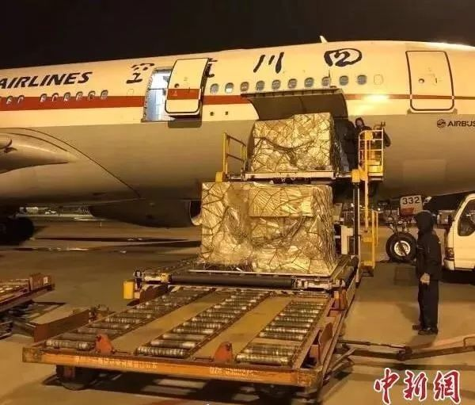
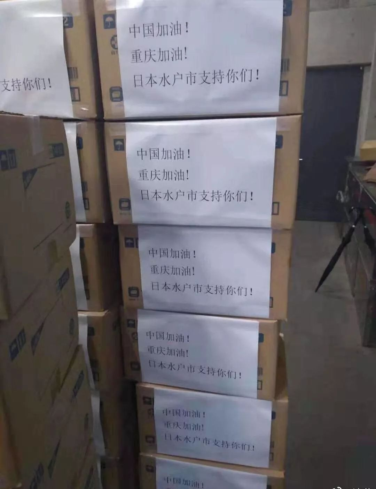

直击河南“硬核”防疫：老实待在家，就是对社会的最大贡献
原文链接 备份链接 27.01.2020本文字数：1285，阅读时长大约3分钟 导读：“请大家高度重视，都不要走亲串友，更不能让外人来我们村走亲戚，避免病毒交叉感染。” 作者 | 第一财经 邵海鹏 编辑 | 冯一龙 武汉疫情牵动着国人的 …

关注并星标消费新声
不错过泛消费任何最新动态

尤其在近十年，尽管国际形势时有起落，但两国的经济和民间交流正在不可逆地粘连到一起，相似的传统文化背景让我们之间形成对照，成为几乎不可能被斩断的近邻。
作者 | 任彤瑶
编辑 | 罗立璇
在这几天焦灼的防疫战情中，第一个被中国人感谢的朋友是日本。从物资支援、到疫情的控制方案，再到日本国内民众自发对中国游客传达出来的善意，都在中国社交平台上得到了很大的传播和认可。
实际上，这样的帮助在近数十年来并不罕见。在中国非典、汶川地震、青海玉树地震等事件中，均有日本援助的身影。尤其在近十年，尽管国际形势时有起落，但两国的经济和民间交流正在不可逆地粘连到一起，相似的传统文化背景让我们之间形成对照，成为几乎不可能被斩断的近邻。
1月26日，日本外相茂木敏充与中国国务委员兼外交部长王毅举行了电话会谈，表示愿同中国一道，共同应对疫情威胁，向中国提供全方位的支援与帮助。“遇到困难时倾力相助的朋友才是真朋友。”

日本援助
自武汉新型肺炎疫情爆发后，引起国际社会多方关注。日本于1月15日确认国内首宗新型冠状病毒感染者，并在此后陆续确认数个感染病例。截至目前，日本国内新型冠状病毒确诊患者增加至6名，其中甚至有一例是从未去过武汉，但1月曾两次运送武汉团体游客的巴士司机。
23日起，日本停飞所有往武汉航班，外务省发出 “2级感染症危险情报”，要求日本国民除紧急情况外，不要前往武汉市和湖北省。同时要求所有在中国的日本人，到驻中国各地的使领馆登记个人资料申报个人健康状况，并在机场加强了红外线体温检测，在中国游客集中的公共区域放置免费消毒液。

对于被感染者，日本政府也采取了严谨的态度。1月26日，日本的疫情发布会引起了国内讨论，厚生劳动省在发布第四例感染者时，拒绝公布患者国籍。面对记者追问，厚生劳动省表示：“国籍与疫情无关，出于对患者个人的尊重，因此不公布国籍。”
一天以后，日本政府在1月27日正式将新型肺炎列为“政府指定传染病”。根据《传染病法》，可以对患者采取强制入院等措施。同时对感染冠状病毒的患者，不分国籍实施免费治疗。
内阁官房长官菅义伟在当天上午举行的记者会上表示：“根据以中国为主的患者不断增加的状况，政府正在制定相关的对策，对于感染者的住院费用与治疗费用，实行公费负担。”
在严肃面对国内疫情的同时，日本政府开始向中国伸出援助之手。28日上午的记者会，回答凤凰网记者提问时菅义伟再次表示：日本有什么能做的，将会全力帮助中国。日本将会送去防护服、口罩等物资。”
支援行动也延伸到了具体地区。作为武汉首个国际友好城市的大分市将防灾仓库中储备的三万只口罩捐往武汉，纸箱上用中文写着“武汉加油! ”
大分市位于九州，并不富裕。据报道，原定3月8日举办的武汉和大分友好城市缔结40周年纪念活动因疫情延期。大分市文化国际课的卫藤佑一科长说：“希望在与武汉密切联系的同时能够为他们做点什么。”
28日，东京都政府提出将向湖北省提供2万套防护服供医护人员使用，据凤凰网记者李淼，这些防护服来自东京都的防地震储备物品。
作为重庆友好城市的日本水户市，28日也向重庆捐赠了5万只医用口罩。在水户市长高桥靖在致重庆市长的信中写道：“衷心祝愿中国的疫情早日获得改善，重庆市民早日重回安定的生活！”在捐赠口罩的箱子上，贴着“中国加油！重庆加油！日本水户市支持你们！”的字样。

在官方之外，日本的公司和个人也在向武汉伸出援手。日本游戏公司DMM的创始人龟山敬司1月25日连发三条推特，表示DMM已将口罩、防护服等一批医用物资运达武汉，正在与红十字会对接，并呼吁大家继续支援武汉。

1月26日，“日本国际友人”向中国捐赠口罩的消息引起了公众关注，据中国驻日大使馆透露，这是来自日本公司伊藤洋华堂的紧急捐赠。500 箱共计80万枚口罩予成都市应对此次新型冠状病毒疫情，这些口罩已抵达成都等待分发。
27日，据朝日新闻报道，日本永旺集团应政府要求，将照常开放旗下5个位于武汉的超市，他们将留下一部分日籍员工维持超市运营。
在民间，不少店铺也在口罩区域贴出了“武汉加油”“中国加油”的字样，一些店铺还将口罩打折出售、限量免费派发。在日华侨也纷纷开始募捐行动。
历史渊源
回顾历史，在数次自然灾难、疫情之中，都有日本向中国伸出援手的身影。非典期间，日本向中国提供数亿日元资金与医疗物资援助，并派遣国际紧急支援专家组协助非典防治。
汶川大地震期、青海玉树地震期间，日本都向中国提供了紧急无偿资金援助，60多人组成的日本救援队是汶川震后第一支抵达灾区的外国专业救援队，民间各界公司、个人也纷纷为灾区进行募款。
日本自1954年加入科伦坡计划后，开始向开发中国家提供政府开发援助。中日邦交正常化后，日本于1979年提出对华提供政府开发援助（又称日本对华ODA），通过有偿资金合作（日元贷款）、无偿资金合作和技术合作向中国提供援助，主要资金来自国民缴纳的税金。
时任日本首相大平正芳称，中国的现代化政策直接关系到国际协调的核心问题，更加富强的中国可使世界更加美好，日本正是基于这一点，并兼顾日本本国的利益才决定援助中国。
截至2018年，日本对华援助总额3.65万亿日元。许多大规模、技术难度高的基建项目都有日本的身影：北京首都国际机场2号航站楼、上海浦东国际机场，武汉长江二桥等多座长江大桥的建设，京秦铁路、南昆铁路等铁路的电气化改造，青岛港等港口的大型泊位建设，武汉钢铁集团和宝山钢铁集团等企业的设备引进等，均使用了低息长期的日元贷款援助。
此外，日本还在医疗保健、环保、人才教育等方面对中国进行无偿援助。建于1984年的中日友好医院就是其中一项成果。在这次新型冠状病毒疫情中，中日友好医院派出20名医护人员前往武汉支援。
从1980年到2018年，39年间，日本可以说是中国最大的援助国。据人民网，日本对华的总援助资金占24个对华援助国家资金的60％以上。

中国国家科学技术委员会及对外贸易经济合作部外国借款管理司曾评价：“1979年以来日本的对华援助，为我国经济建设打下了基础，并促进了我国经济社会发展。特别是无偿援助，为中日友好和经贸关系的发展做出了贡献。”
随着中国经济发展水平提升，日本国内对逐渐减少以至最终取消对华政府开发援助的主张与讨论也逐渐出现，进入21世纪后，日本数次调整对华援助政策，大幅削减了对华ODA额度。
2018年，在日本宣布即将结束对华ODA后，外交部发言人华春莹回应称：“日本对华官方资金合作在中国改革开放和经济建设中发挥了积极作用，日本也从中获得了实实在在的利益。这是中日互利双赢合作的重要组成部分。“
此次武汉疫情，关于日本援助的讨论与猜测不少。在网络舆论场中，有许多表达感谢的声音，也有不少对援助动机与力度的猜疑。无论如何，来自远方的帮助与奔走呼喊，始终值得感谢。
end
**©消费新声原创内容 转载请联系授权
**
【爆料或寻求报道】加微信号：Suburb001
【商务合作】加微信号：sansheng_kefu


原文链接 备份链接 27.01.2020本文字数：1285，阅读时长大约3分钟 导读：“请大家高度重视，都不要走亲串友，更不能让外人来我们村走亲戚，避免病毒交叉感染。” 作者 | 第一财经 邵海鹏 编辑 | 冯一龙 武汉疫情牵动着国人的 …
原文链接 备份链接 这注定是一个难捱的春节。 截至1月23日24时， 全国确诊新型肺炎病例830例， 死亡25例。 截至1月23日晚，中国新型肺炎疫情地图（来源：丁香医生） 同时，国际确诊案例也陆续出现。 截至1月23日，数据如下： 泰 …
原文链接 备份链接 作者：张霞 来源：商业人物（ID：biz-leaders） 壹 2020年1月24日，农历的大年三十，我典型的山东大汉老爸生了一场闷气。 这天晚上，他的亲姐姐，也就是我姑姑，携表弟来我家拜年。要面子的爸爸赶忙从抽屉深 …
原文链接 备份链接 本文故事来自一名化名为“平安”的武汉大学生，记述了她从返乡、封城，再到过年所经历的种种。这个特殊的春节，焦虑与希望同在，寂静与喧嚣并存。身处「风暴中心」，从慌乱到乐观，她的心理发生了什么样的变化？让我们一起来看看她过去 …
原文链接 备份链接 《战疫口述记》，是燃财经在新型冠状病毒肺炎期间推出的特别栏目，记录疫情亲历者的观察和感受。本文为第2期，第1期请见《我在武汉战肺炎》。 作者 | 闫丽娇 唐亚华 孟亚娜 金玙璠 黎明 孔明明 苏琦 编辑 | 周昶帆 春 …